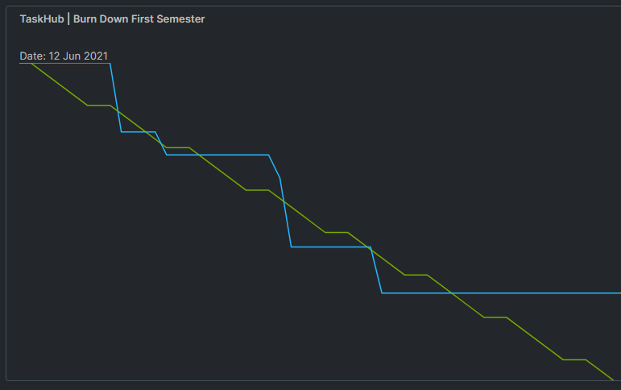
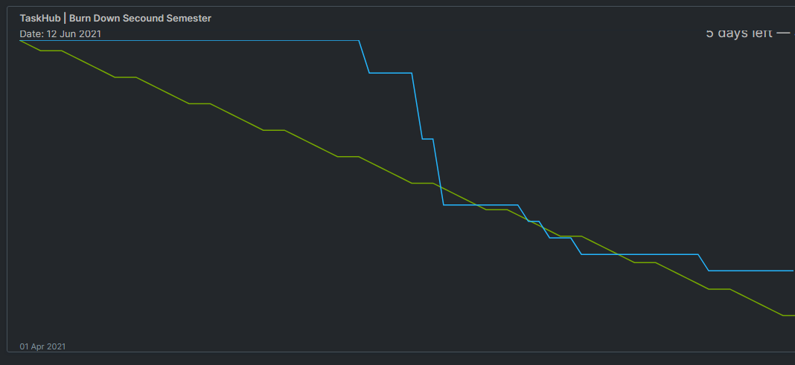
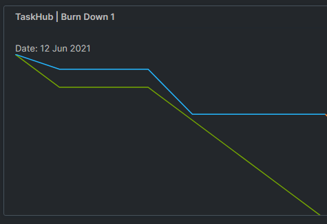
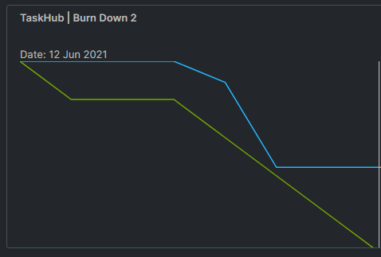
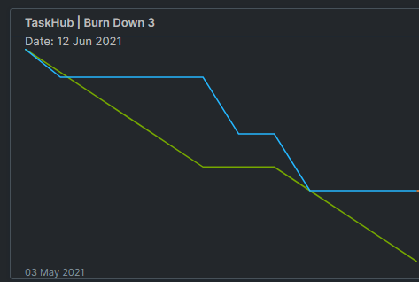

1. Understanding YOUR business needs
1.1 Our project
1.1.1 Our vision 🔮
- Collaborate app
- Simultaneously editing or creating files
- Task management
- Setting deadlines
inspired by a CTF Tool from StratumArthuut

1.1.2 Use cases (incl. scopes)

1.1.3 SRS

1.1.4 non-functional
- Easy to understand
- No overloaded features/UI
- Backup features
- Very fast
- Lightning speed performance
- Lightweight
- Minimalistic
1.2. Project methodology
Scrum
For our project methodology we use the commonly used methodology of scrum

1.3 Project management
1.3.1 RUP
RUP for the first semester
1.3.1 RUP
RUP for the secound semester
1.3.2 Scrumming

1.3.2 Scrumming
First sprint 06.11.2020 - 16.11.2020
1.3.2 Scrumming
Secound sprint 20.11.2020 - 27.11.2020
1.3.2 Scrumming
Third sprint 03.05.2021 - 10.05.2021
1.4 Iterative process
With scrum we are following an iterative process, which adjusts itself on every elaboration

1.4.1 Why we choose an iterative process
- constant comparison with the requirements
- ➜ high quality
- Low risk
- Test possible after each iteration of the product
- Fast results
1.5 Cost estamination
- Two UC( 7 & 10) are over the estimation
2. Technical ability
2.1 Live-demo
2.1.1 Tools we used
- Git -

- IntelliJ -

- YouTrack -

- Postman -

2.1.2 Live-demo with Fred
⬆️this is Fred
2.2 Extend of functionality
2.2.1 Extend of functionality - backend
- we are using frameworks to sync our database / Sequelize
- ➾ Easy to add tables and objects
- we are using best practices to design our APIs and services
- ➾ Easy to understand and extend
- NPM as a package manager
- ➾ Easy to add more packages
2.2.2 Extend of functionality - frontend
- TODO DANNY
2.3 Visualisation of our code
TODO TOMORROW3. Quality
3.1 Architecture

3.2 Configuration
3.2.1 Automation
3.2.2 Continous integration
3.3 Risk management
3.4 Testing

3.5 Patterns
3.6 Metrics
🔍 Out of Scope
📝 Handout
Time Overview
| First Name | Second Name | Project(hours) | |
|---|---|---|---|
| Kristin | Agne | agne.kristin@student.dhbw-karlsruhe.de | ~ 45 |
| Blog, Github Administration, Peer Review, Organisation | |||
| Danny | Kroll | kroll.danny@student.dhbw-karlsruhe.de | ~ 50 |
| Angular Frontend, YouTrack, Project Management, Midterm Presentation | |||
| Nico | Holzhäuser | holzhaeuser.nico@student.dhbw-karlsruhe.de | ~ 60 |
| Infrastructure, Backend, Docker, Database | |||
Use case diagramm
Print your own handout
Look at the printing terms on top right ↗